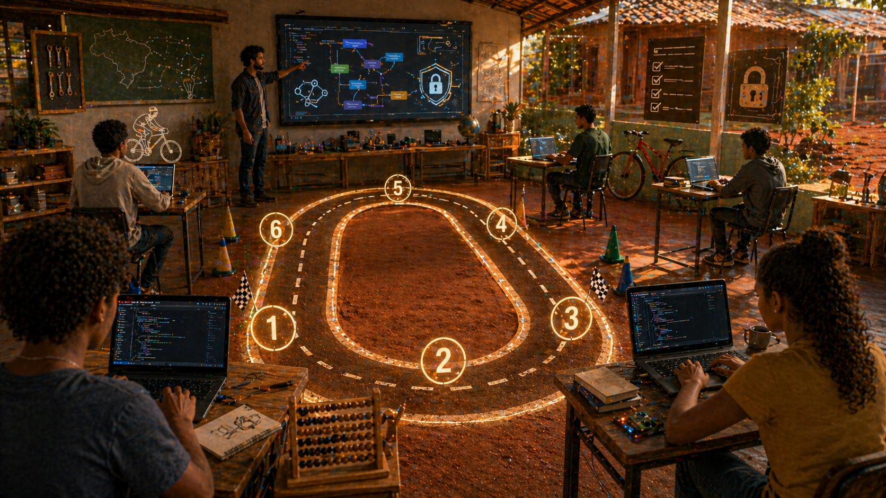

Quando a Escola Ganha uma Pista
A Primeira Curva
Em sala de aula, tecnologia costuma aparecer como objeto pronto: aplicativo, plataforma, login, vídeo, IA generativa, formulário bonito. O aluno usa, entrega a tarefa e segue. Mas nem sempre entende a estrutura por trás. É como andar de bicicleta olhando só para a pintura do quadro, sem perceber corrente, freio, marcha e equilíbrio.
O Circuito Ferradura entra nesse espaço como pista. Não entrega só conteúdo. Entrega percurso. O aluno precisa largar, fazer curva, errar entrada, corrigir trajeto, acelerar no momento certo e entender por que caiu. É formação técnica com movimento.
A imagem da ferradura não é enfeite. Ela lembra que aprender tecnologia raramente é uma linha reta. Às vezes você volta para revisar variável. Às vezes precisa refazer função. Às vezes descobre que a falha não está no Python, mas na leitura do problema. A pista ensina isso sem discurso solene. Ela põe o aluno para pedalar.
Por Que Pista e Não Vitrine
Vitrine mostra. Pista exige movimento. A escola já tem vitrine demais: ferramenta nova, palestra inspiradora, "semana da tecnologia", robô no palco e aluno batendo palma sem tocar no problema. Isso anima por cinco minutos. Depois volta o caderno, a prova e o medo de escrever a primeira linha de código.
No Circuito Ferradura, a lógica vem antes do espetáculo. A oficina foi pensada como uma jornada de cerca de 40 horas, organizada em 6 fases progressivas. Cada fase é uma curva da pista. O aluno não pula direto para "fazer IA". Primeiro aprende a organizar estado, entender número, criar função, testar condição, ler erro e explicar decisão.
O Ábaco Como Motor de Lógica
O detalhe mais interessante da oficina é que ela não começa com uma biblioteca moderna. Começa com o ábaco romano. Parece estranho por uns três segundos. Depois faz sentido.
O ábaco romano é uma máquina de estado antiga. Tem ranhuras, contas, posições, valores, combinação de 5 com unidades, dezenas, centenas e milhares. Em linguagem de sala de aula: ele permite explicar variável, estado, incremento, decremento, notação posicional, condição e iteração sem depender de abstração vazia.
Quando o aluno representa 1993 no ábaco, ele não está só brincando de museu. Está entendendo que um número pode ser decomposto, que cada posição tem peso, que mover uma conta muda o resultado e que regra mal aplicada gera valor errado. Isso é programação antes da sintaxe.
Ranhura I -> unidades, combina 5 + contas menores
Ranhura X -> dezenas, muda o peso da decisão
Ranhura C -> centenas, exige posição correta
Ranhura ↀ -> milhares, mostra escala
Python -> transforma regra em função testávelAs Seis Fases da Ferradura
A oficina tem mapa. Isso é importante para escola, porque professor precisa de roteiro e aluno precisa saber onde está. A largada começa em O Terreno Vazio, com fundamentos: variável, tipo de dado, primeiro programa, leitura do ábaco e preparação mental para pensar em regra.
Depois vem A Curva da Paineira, onde a ideia de combinação ganha corpo. O sistema bi-quinário ajuda a entender que 8 não é mágica: é 5 + 3. Parece simples, mas é nesse tipo de clareza que nasce o raciocínio de condição.
Em O Salto da Rampa, o aluno percebe movimento: subir, baixar, somar, remover, alterar estado. É ali que incremento, decremento e mudança de valor deixam de ser símbolos perdidos no quadro.
A Subida de Recuperação aprofunda posição e escala. Unidade, dezena, centena e milhar viram pista para falar de estrutura. Já A Grande Corrida abre espaço para projetos, segurança digital e noções que conversam com OIDC, tokens e autenticação. A chegada, O Lucro na Calçada, amarra portfólio, Git, projeto final e certificado.
Não é uma sequência aleatória de aulas. É uma trilha que tenta evitar o erro clássico da formação técnica: jogar ferramenta antes de formar pensamento.
O Que a Trilha Pode Ensinar
Lógica, Python, fundamentos de automação, noções de identidade digital, segurança, Git, portfólio e leitura de erro. Mas o valor não está só na lista de tópicos. Lista de tópico qualquer PDF tem. O valor está na ordem e na prática.
O aluno começa pequeno, com uma regra que consegue explicar. Depois transforma isso em código. Depois testa. Depois vê quebrar. Depois corrige. Esse ciclo cria resistência cognitiva. É o músculo que falta quando a pessoa apenas assiste tutorial e acha que aprendeu porque o vídeo rodou sem erro.
Para alunos, isso reduz medo. Para professores, cria roteiro. Para instituições, abre uma conversa concreta sobre formação técnica sem exigir laboratório impossível. Python roda em máquina simples. O curso tem versão HTML e aplicativo Windows de referência, o CircuitoFerradura.exe. Não precisa começar com uma sala espacial financiada por bilionário entediado.
Onde a Segurança Entra
Segurança digital não deveria aparecer só no fim, como sermão. No Circuito Ferradura, ela entra como consequência natural da lógica. Se o aluno entende estado, fluxo, condição e validação, fica mais fácil compreender por que login não é só tela e por que token não é figurinha colecionável.
Essa ponte conversa com Reino OIDC e Área 51. O estudante não precisa sair especialista em protocolo. Mas pode sair entendendo que sistemas têm fronteiras, que identidade precisa ser verificada, que um fluxo mal desenhado cria risco e que código não é só "fazer funcionar". Código também é limitar o que não deve acontecer.
Isso muda a cabeça de quem entra em suporte, estágio, automação ou desenvolvimento. A pessoa deixa de perguntar apenas "qual botão aperta?" e começa a perguntar "qual regra garante que esse botão deveria existir?".
A Empresa Também Entra Nessa História
Quem contrata sabe a diferença entre alguém que decorou ferramenta e alguém que aprendeu a pensar fluxo. O Circuito mira essa segunda pessoa. Não promete formar sênior em 40 horas. Ainda bem. Curso que promete isso deveria vir com alvará de ficção científica.
O que ele pode formar é base: gente que entende variável, condição, função, teste simples, versionamento, leitura de erro e responsabilidade. Para empresa pequena, isso ajuda no suporte e na automação. Para time júnior, reduz dependência. Para pessoa em transição de carreira, dá uma pista para entrar sem cair direto no abismo do framework da moda.
Em escolas, o ganho é ainda mais direto. A instituição deixa de tratar tecnologia como evento e passa a tratar como percurso. O professor ganha uma narrativa. O aluno ganha checkpoint. A coordenação ganha algo apresentável sem transformar o curso em feira permanente de gadgets.
O Que Não Devemos Prometer
O Circuito Ferradura não substitui curso técnico completo, nem faculdade, nem prática profissional. Ele também não deve ser vendido como mágica de empregabilidade. A promessa correta é mais honesta: criar base lógica, dar vocabulário técnico e transformar curiosidade em projeto inicial.
Para pessoa física, a versão gratuita ajuda a experimentar a pista. Para instituições, o uso escolar precisa de licença e acompanhamento adequado. Isso protege o produto, protege a narrativa e evita aquele velho costume brasileiro de achar que material educacional aparece por fotossíntese.
Amarra
O Brasil não precisa apenas consumir tecnologia. Precisa formar gente capaz de perguntar como ela funciona. Quando a escola ganha uma pista, a curiosidade ganha direção.
O Circuito Ferradura é isso: uma ferradura de terra vermelha, ábaco romano, Python e segurança digital colocados na mesma oficina. Não para acelerar aluno sem freio. Para ensinar a fazer curva.
Hashtags
Contato
- E-mail: suporte@caracore.com.br
- Site: www.caracore.com.br
- LinkedIn: Cara Core Informática
Uma trilha prática para escolas, pessoas e times em início técnico.
Conhecer o Circuito Ferradura
Artigo publicado em 18 de julho de 2026
© 2026 Cara Core Informática. Todos os direitos reservados.